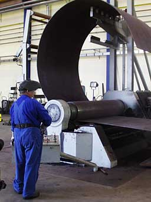
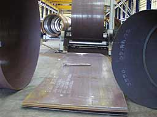

All
photographs
© 1999 Soren Krohn

Manufacturing
Wind Turbine Towers
Rolling
Conical Tower Sections
 Most modern wind turbine towers are conical
tubular steel towers, as we learned on the page about wind
turbine towers.
Most modern wind turbine towers are conical
tubular steel towers, as we learned on the page about wind
turbine towers.
 This image from a tower manufacturer's workshop
shows how a steel plate is rolled into a conical subsection for
a wind turbine tower. It is a bit tricky to achieve the conical
shape, since the tension (pressure) of the steel rollers has
to be different at the two sides in order to make the plate bend
properly.
This image from a tower manufacturer's workshop
shows how a steel plate is rolled into a conical subsection for
a wind turbine tower. It is a bit tricky to achieve the conical
shape, since the tension (pressure) of the steel rollers has
to be different at the two sides in order to make the plate bend
properly.
 Towers are assembled from these smaller,
conical subsections which are cut and rolled into the right shape,
and then welded together.
Towers are assembled from these smaller,
conical subsections which are cut and rolled into the right shape,
and then welded together.
 Towers are usually manufactured in 20 to
30 m sections (65 to 100 ft.), the limiting factor being transportation
on roads or rail. Typical modern tower weights are 40 metric
tonnes for a 50 m (165 ft.) tower for a turbine with a 44 m rotor
diameter (600 kW), and 80 metric tonnes for a 60 metre tower
for a 72 m rotor diameter (2000 kW).
Towers are usually manufactured in 20 to
30 m sections (65 to 100 ft.), the limiting factor being transportation
on roads or rail. Typical modern tower weights are 40 metric
tonnes for a 50 m (165 ft.) tower for a turbine with a 44 m rotor
diameter (600 kW), and 80 metric tonnes for a 60 metre tower
for a 72 m rotor diameter (2000 kW).
Designed
by the Turbine Manufacturer
Towers for wind turbines are generally designed by each turbine
manufacturer, since the entire wind turbine has to be type approved
as a unit. (The reasons are explained in the page about structural
dynamics). So even if some towers are manufactured by independent
producers, they are always specific for each manufacturer.
 Independent tower manufacturers are often
also manufacturers of oil tanks or pressure vessels, since the
machinery and safety inspection procedures are very similar.
Independent tower manufacturers are often
also manufacturers of oil tanks or pressure vessels, since the
machinery and safety inspection procedures are very similar.
Weight
Matters
Tower weights (per installed power in kW) have declined by about
50% during the past five years due to more advanced design methods.
Still, towers are a fairly heavy part of the wind turbine, so
transportation costs are important. For larger markets it generally
does not pay to transport towers more than 1000 km (600 miles)
by road. In case the distance is larger (and the project is a
large one), towers are usually manufactured locally.
Banana
Peel Shaped Plates
 In
order to end up with a cone-shaped section, the plate used for
rolling has to be curved along the longest edges, and the short
edges are not parallel. Most tower manufacturers use programmable
laser cutting tools in order to obtain the appropriate shape
for the steel plate.
In
order to end up with a cone-shaped section, the plate used for
rolling has to be curved along the longest edges, and the short
edges are not parallel. Most tower manufacturers use programmable
laser cutting tools in order to obtain the appropriate shape
for the steel plate.
© Copyright 2000 Soren Krohn
Updated 6 August 2000
http://www.windpower.org/tour/manu/towerm.htm